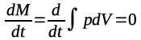
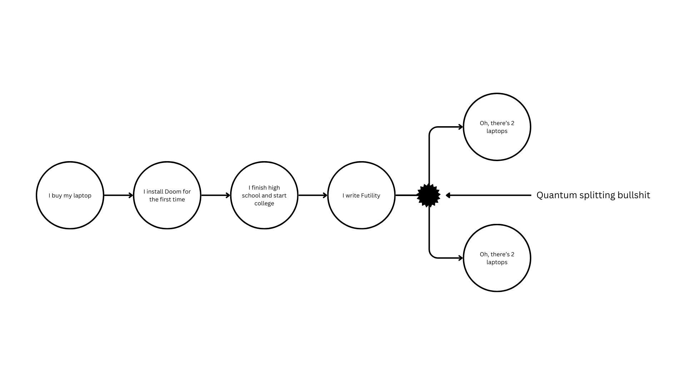
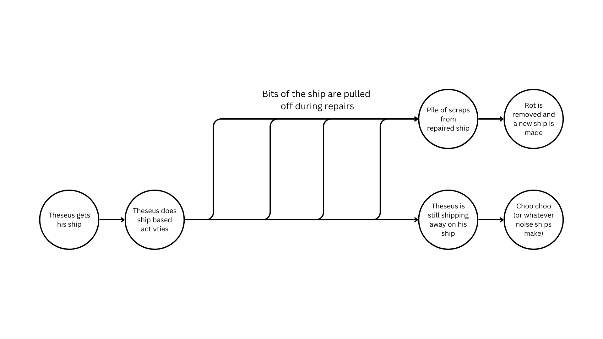

The ship wherein Theseus and the youth of Athens returned from Crete had thirty oars, and was preserved by the Athenians down even to the time of Demetrius Phalereus, for they took away the old planks as they decayed, putting in new and strong timber in their places, insomuch that this ship became a standing example among the philosophers, for the logical question of things that grow; one side holding that the ship remained the same, and the other contending that it was not the same.
— Plutarch, Life of Theseus 23.1

—Law of Conservation of Mass
This is how the universe works:
Medium and meaning are separate. In the end, everything is just information: ‘I am a proton", ‘I have this wavefunction’, ‘There are this many of us’.
-Adrian Ashmore, From Fine Structure by QNTM
My Macbook is dying. It’s had a good run. I promised myself when I got it it would last me a good 8 years, and that was 7 years ago. I named it MacGyver1. In the 7 years I had it I got through all of high school and 3.5 of my 4 years of college. I made my first games, wrote my first essays and poems, made my first D&D character (he was a goose named Gunther), and played an unholy amount of Balatro on this computer. Its a lump of aluminum, silicon, and copper, and I’ve grown a little attached to the thing. I’m going to earn my degree on it, come hell or high water.
Unfortunately, hell is in my backyard and water is pouring in through my windows. I would love to stuff some upgrades in MacGyver, maybe a new battery and bigger SSD, but since Apple is Apple, saving my tech isn’t possible, and eventually this thing will become a five pound aluminum brick of e-waste. But lets imagine I could. If I change the battery and storage, this would still be MacGyver, right? What about if I upgraded the CPU, the actual working part? Or the aluminum shell with all my stickers on? How much change do I need to do until its no longer MacGyver? Or will it always be MacGyver?
The Ship of Theseus is probably the thought experiment that pops up the most in real life, especially when it comes to the preservation of sentimental items. A better example of this would be my grandfather’s Leatherman multitool that was passed down to me after he passed. Right now, its sitting on a shelf in my room, and I’m more than happy keeping it there simply as a keepsake. But if I wanted to use it, I would likely have to clean it, oil the hinges, and replace the worn down blades. By then, would it still be my grandfather’s tool?
Yes and no. Is it too early to start talking about quantum superpositions?
That’s right ladies and gentlemen. Guys, gals, and nonbinary pals. This 22 year old who never once studied philosophy, hardly experienced life, and hasn’t even held down a full time job outside of uni is about to solve The Ship of Theseus. Grab some popcorn, hold onto your ass, and prepare for it to get convoluted and existential up in this bitch2.
First let’s start with a simple warm up problem: what is a thing? Like a physical object. What is it really? At the lowest level, a thing is a bunch of atoms in some kind of order. In a series of defined structures and patters, we go from atoms, to molecules, to bulk substances, finally to things, give or take a few steps. Take my Mac for example. Silicon, boron, and antimony atoms make up a crystal lattice called doped silicon, which makes up a few billion transistors. These transistors make up a microchip. Take a few of those and some other components and you get a circuit board. Add some peripherals, a metal case, and a battery and you got a laptop. Congrats! Its useless!
“Useless!?” I hear you say, “How can you call a laptop useless, especially as a computer scientist!?” Fine. A laptop is a terrible example of a simple object because we already have another level of abstraction to get to. The function of a computer is entirely dependent on it’s software. The BIOS, operating system, drivers, and all those little apps you have installed define the use of the machine3. You can’t touch them, you can’t feel them or see them, but without them, your computer is a super fancy rock. So this object in front of you is not just defined by physical stuff, but at some level there’s intangible goop that defines what it is. The same applies to something like books. Fear and Loathing in Las Vegas and The Bible are both ‘books’, stacks of cellulose based paper and glue (in case you don’t know what a book is), but vary wildly in the stories contained4. Physically identical objects (atoms, molecules, paper) are further defined by their intangible properties (software, stories). With me so far? Stuff isn’t just stuff, but also information.
Hark! What’s this on the horizon? A third level of abstraction! This is the one where it gets interesting. Let’s say I wake up one morning and there’s now two MacGyver’s on my desk. The original one and the 2016 reboot5. They’re identical in every way. Same stickers on the cover, same software, and the same little mark on the space bar. Atom for atom, there is not a single difference in these two laptops. They’re the same, right? They’re both MacGyver down to the molecular level.
Of course not. Surely you cannot have gotten this far in this essay without spotting that as a rhetorical question from a mile away. Objects are not simply defined by matter, but by the information attached to them. I already showed this with software and stories, but now the defining information is that of legends and histories.
One of these computers is my MacGyver. The one I can point to and say “I got that in high school. I wrote Futility on that. I went through college with that one.” No matter how close of a replica the other is, no matter how well it runs Doom, or how cool it is that $1000 worth of laptop just appeared out of nowhere, it will never be MacGyver.
Here’s a trickier one. I wake up one morning and again there’s two MacGyvers. This time, each one is exactly half old and half new. The original MacGyver split in half at the molecular level, and regenerated all new material to fill in the gaps, each becoming both half old MacGyver and half replicated MacGyver. Now, I can only fit one in my backpack, so which one is the real MacGyver?
Simple. Its whichever one I pick up and say is the real Macgyver.
That seems like a huge cop out, but I promise its actually a really cool and interesting answer to this problem, and also the basis of the essay you’re reading so don’t give up on me now. Let’s look at this in the form of a graph.

Its
heavily simplified, but this is the general story of MacGyver. At the
weird quantum splitting event, labeled “quantum splitting bullshit”
on the graph, the story splits. But, no matter which laptop I pick as
the “true MacGyver,” it will have the exact same story pre-split.
Now we’re in a really weird state here. There can’t be two
MacGyvers, so one of these has to inherit the pre-split story and one
has to be severed off from the timeline to become it’s own object
with its own story (starting with the split). So how do we do this?
Hang on, there’s something bumping against my leg let me check it
out… oh its a cat. That’s strange. There’s a collar around its
neck. It has a tag on it that says “Property of Schrödinger.” I
wonder who that… uh oh.
THAT’S RIGHT FUCKERS I’M BRINGING SCHRODINGER’S CAT INTO THE MIX.
Those two laptops represent two quantum states, one that is MacGyver and one that isn’t. However, until I choose one to take, they exist as a mix of both. MacGyver and not MacGyver. Alive and dead. Choose a laptop to be MacGyver, that quantum state will collapse, making the one I choose MacGyver and the other to be severed from the story to become its own object.
The key here is the object its not just defined by its physical matter, but also by its story and history. And as the owner of the laptop and the one who writes that story, the choice as to which is the real MacGyver is mine. It doesn’t matter whether its Aidan’s laptop, Theseus’ Ship, or Chekhov’s Gun6. There will be repairs, modifications, bits lost in the dirt or thrown away, new paint jobs, scratches, stickers taken on and off, an endless amount of change in the physical stuff that makes up an object. But as long as someone can still tell the story of the object and point to it and say “that’s the one right there,” it will always remain the same.
The example of my laptop is much simpler than the case of the Ship of Theseus. There’s a clean split there, whereas the story of the Ship requires a series of small gradual changes to one ship, while the other is slowly built up before undergoing a sudden change (the rot being removed from the scrap and becoming a ship itself), but if we were to look at the graph of the story of the ship I’d argue its linage is even more clear.

Here’s
the graphified version of the original story. Theseus has his ship
which gets repaired over time. Eventually, the ship is all new and
somewhere in storage is a bunch of rotted wood. Ignoring the
impracticality of storing rotted wood, some magical alchemist comes
by and restores all the wood so its not rotting, and a ship is built
using the original material. This is assuming all of the bits of wood
that fell off in the ocean and digested by barnacles and lichen are
somehow gathered and put back in place, but that’s neither here nor
there because once we start getting into what ‘rot’ actually
means the whole story gets so much messier7.
We now have two ships, the repaired one and the restored one with
original material.
This graph is more complex than the spontaneous laptop situation, but there’s a sort of continuity here that makes the problem easier. Presumably, while the ship was undergoing repairs, Theseus was still sailing it. A plank here and a board there doesn’t change the continuity of the story. The ship which Theseus sails is the Ship of Theseus. Even if the rot is removed and the ship is rebuilt with the exact same materials, the branch of the story that made the Ship of Theseus the Ship of Theseus was still ongoing. The Ship of Theseus is not just some title, it is Theseus’ ship. The ship which he uses and claims has his, by its very nature, must remain Theseus’ ship, the ship that the story continues on.
So what becomes of that other ship? It becomes its own. It was born of the Ship of Theseus, took on its own life, and now exist parallel to the Ship of Theseus. It may be made of the atoms of the original ship, but it is the original ship no longer, as it no longer shares in the lineage of that story.
Finally, let’s look at the story a different way. Let’s say Theseus stopped using the ship during the repairs. We went away to Rome or whatever they did for vacation back then and when he came back there were two ships, one repaired with new planks and one that had all the rot and damage magically removed. Again, the true ship comes down to whichever one he picks to be his ship. Both are repaired, one classically with new materials and one magically by having the rot removed. At this point, their history is the same. The one that becomes the true Ship of Theseus is the one which Theseus chooses, saying “This is my ship. It was repaired, but I will continue on my travels in this one. The other is simply scrap.”
Material is immaterial. When it comes down to what defines an object, its not silicon or cellulose, but the stories tied to them. We hold no commitments to stuff, things, or goop. Molecules can come and go, but the legacy created with them is what matters. Go out into the world. Tell a story. Fix a ship. Just remember to hold the story important, not the ship you rode in on8.
1I name all my tech, and you have to admit MacGyver goes hard as hell. Its closely followed by my iPad, PADdington.
2And probably wrong.
3Ok, so technically they are physical in the from of transistors or bytes on the hard drive, but that’s not the point here. What do I look like, a computer scientist?
4Citation needed.
5I understand this is a joke for maybe 3 people reading this, but fuck you its so funny.
6This, however, does not hold true for Schrödinger’s cat or Pavlov’s dog. You cannot replace parts of an animal. Please don’t even try.
7Would the rot not be part of the ship? Is rot a physical thing, like broken down wood, or a process? Is the fungus and algae and barnacles that are damaging the ship rotters? Or are they too part of the ship?
8And on that note, what the hell did Theseus do anyways? Make sure whatever you do is cool enough that people actually talk about what you did and not a hypothetical problem about your boat.